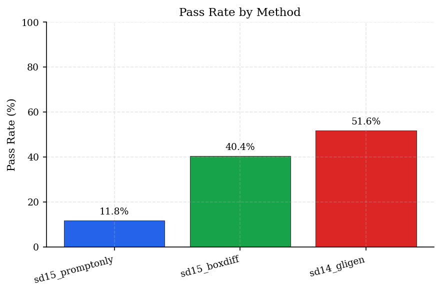
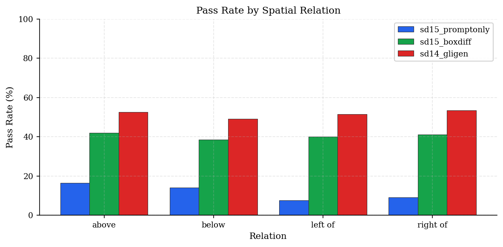
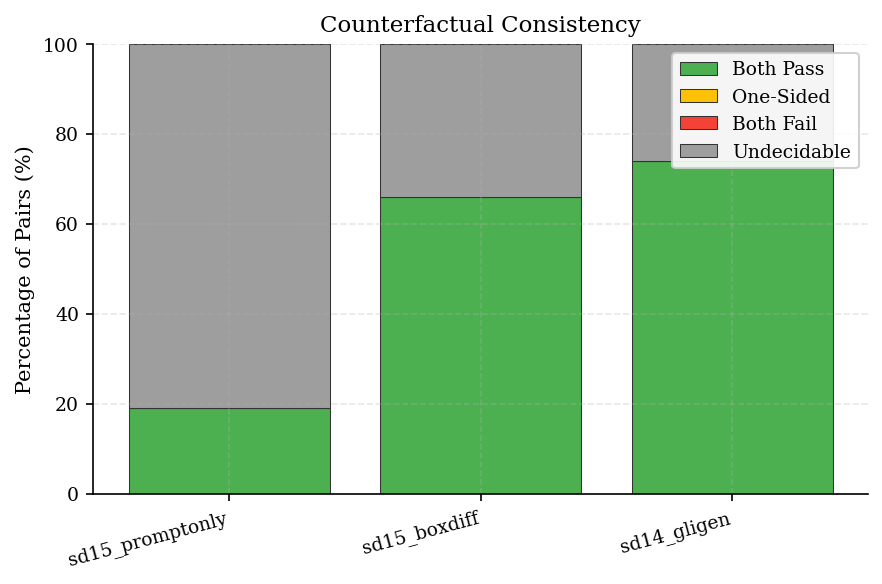
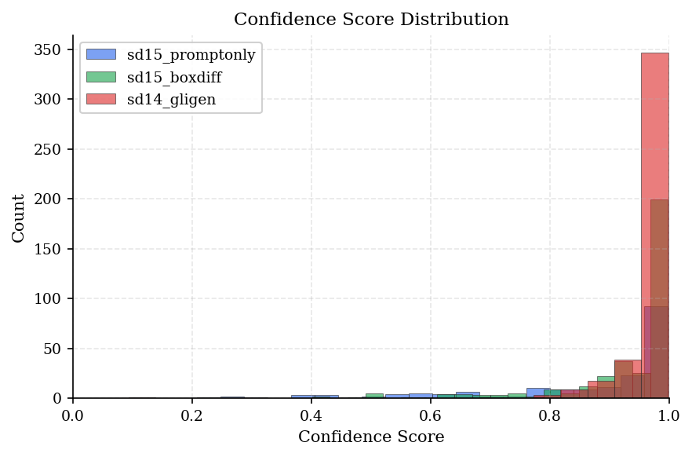
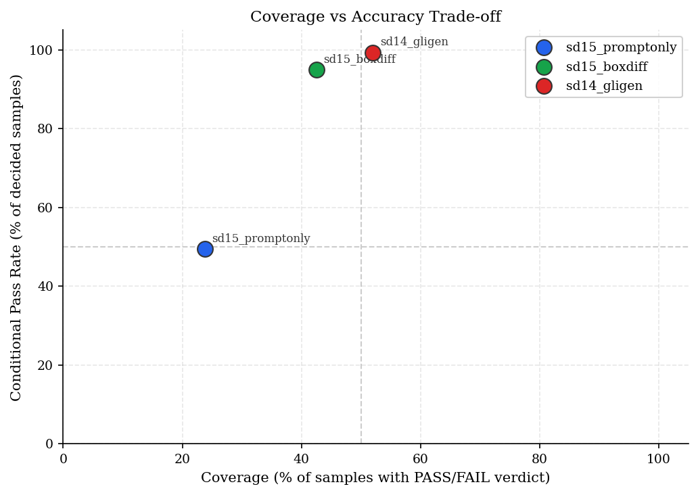

Summary
Run
Samples
Pass Rate
Coverage
Best-of-K Pass
Mean Conf.
sd15_promptonly 800
11.8%
23.8%
34.0%
0.206
sd15_boxdiff 800
40.4%
42.5%
76.0%
0.395
sd14_gligen 800
51.6%
52.0%
78.5%
0.506
Pass Rate Comparison

Figure 1. Overall pass rate comparison across runs.
Verdict Distribution
sd15_promptonly
sd15_boxdiff
sd14_gligen
Pass Rate by Relation

Figure 2. Pass rate breakdown by spatial relation.
Relation
sd15_promptonly
sd15_boxdiff
sd14_gligen
above
16.5%
42.0%
52.5%
below
14.0%
38.5%
49.0%
left of
7.5%
40.0%
51.5%
right of
9.0%
41.0%
53.5%
Best-of-K Analysis (K=4)
A prompt passes if any of its K generated images pass.
Run
Prompts
Pass
Fail
Undecidable
Coverage
sd15_promptonly
200
68
0
132
34.0%
sd15_boxdiff
200
152
1
47
76.5%
sd14_gligen
200
157
0
43
78.5%
Counterfactual Consistency
Pairs of logically equivalent prompts (e.g., "A left of B" ↔ "B right of A") should produce consistent results.

Figure 3. Counterfactual pair consistency breakdown.
Run
Pairs
Both Pass
One-Sided
Both Fail
Undecidable
sd15_promptonly
100
19.0%
0.0%
0.0%
81.0% (81)
sd15_boxdiff
100
66.0%
0.0%
0.0%
34.0% (34)
sd14_gligen
100
74.0%
0.0%
0.0%
26.0% (26)
Confidence Distribution

Figure 4. Distribution of confidence scores for decided samples.
Coverage vs Accuracy Trade-off
Coverage measures the fraction of samples with decisive verdicts (PASS or FAIL). Higher coverage with maintained accuracy indicates better calibration.

Figure 5. Coverage (% decided) vs Conditional Pass Rate (accuracy on decided samples).
SpatialBench-UC Report • 2026-01-16 11:56 UTC